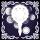
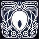
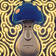
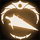
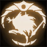

Todas Conquistas
Amuletos

Afortunado
Adquira seu primeiro Amuleto
Conquista simples conseguida sem esforço

Encantado
Adquira metade dos Amuletos de Hallownest.
Um pouco mais complicada, mas possível de se realizar na primeira run. Um total de 20 amuletos.

Abençoado
Adquira todos os Amuletos e receba a bênção de Salubra.
Conquista mais complexa. Aconselhável olhar o mapa com as localizações de todos os amuletos e guias. A benção de Salubra recarrega alma quando o player descansa em um banco. Um total de 45 amuletos.
Fragmento de Máscara

Protegido
Adquira 4 Fragmentos de Máscara.
Conquista simples, possível de realizar na primeira run sem complicações.
Mascarado
Adquira todos os Fragmentos de Máscara.
Um total de 16 fragmentos. Recomendável a consulta de todas as localidades.
Fragmentos de Receptáculo

Cheio de Alma
Adquira todos os Fragmentos de Receptáculo.
Conquista fácil de ser realizada de primeira.
Alma do mundo
Adquira todos os Fragmentos de Receptáculo.
Um total de 9 fragmentos espalhados pelo jogo. Conquista relativamente simples, caso necessário consultar mapa.
Bosses

Falsidade
Derrote o False Knight.
Um dos primeiros bosses do jogo localizado na encruzilhada esquecida. Derrotá-lo dará um encaixe de amuleto.
Força
Derrote o Failed Champion.
A versão Dream do Fake Knight, um pouco mais forte e mais rápido, localizado nas proximidades do local da primeira batalha, escondido na parte de cima em uma parede falsa.

Teste de Resolução
Derrote Hornet em Greenpath.
Geralmente a segunda batalha de boss no jogo. Batalha um pouco mais complicada, mas facilmente realizada na primeira run por ser obrigatória. Derrotá-la dará a habilidade Mothwing Cloak.

Prova de Resolução
Derrote Hornet em Kigdom's Edge.
Após derotar Hornet em Greenpath ela pode ser encontrada em Kingdom’s Edge em uma versão mais forte e com habilidades diferentes para testar a força de Knight. Derrotá-la dará acesso a Marca do Rei.

Iluminação
Derrote o Soul Master.
Pode ser localizado no topo da Soul Sanctum, na City of Tears. Derrotá-lo dará o feitiço Desolate Dive.

Mortalidade
Derrote o Soul Tyrant.
Variante Dream do Soul Master. Mais rápido e mais forte que o primeiro. Sua bataçha pode ser acessada ao bater com o Ferrão dos Sonhos no corpo do Soul Master no topo da Soul Sanctum. Derrotá-lo dará 300 essências.

Libertação
Derrote o Broken Vessel.
Um dos bosses principais do jogo. Bloqueia o caminho para as Monarch Wings. Localizado em um corredor ao oete dentro do Ancient Basin.
Paz
Derrote o Lost Kin.
Variante Dream do Broken Vessel. Mais forte e mai rápido. Derrotá-lo dará 400 essências. Acertar o corpo do Broken Vessel com o Ferrão dos sonhos dará acesso a luta.

Honra
Derrote o Dung Defender.
Um dos bosses principais do jogo. Defende o acesso a Isma's Grove. Localizado ao leste dentro da Royal Waterways.
Respeito
Derrote os Mantis Lords.
Uma das primeiras lutas de Hollow Knight. Derrotá-las permite o acesso a Mantis Village onde é possível encontrar o Mantis Claw, uma habilidade do jogo.

Obssessão
Derrote o Collector.
Um boss escondido. Derrotá-lo dará o Mapa do Coletor, que marca a localização de todas as larvas.

Execução
Derrote o Traitor Lord.
Um dos bosses principais do jogo. Bloqueia o caminho para a White Lady, que dará metade do amuleto Kingsoul. Localizado na parte de cima em Queen's Gardes

Rivalidade
Derrote o Zote no Coliseu dos Tolos.
Após ser salvo pelo Knight em algumas localidades, Zote pode ser encontrado no Coliseu dos tolos. Sua batalha ocorre no final do primeiro teste do coliseu.
Essência dos Sonhos

Sintonia
Colete 600 Essências.
Necessário adquirir o Ferrão dos Sonhos. Conquista simples.

Despertar
Colete 1800 Essências e desperte o Ferrão dos Sonhos.
Conquista mais complicada. Necessário batalhar com Dream Bosses.

Ascenção
Colete 2400 Essências e ouça as palavras finais da Vidente.
Necessário coloter essência de todas as formas possíveis e derrotar todos os Dream Bosses. Depois disso ir falar com a vidente.
Grubs
Amigo das Larvas
Resgate metade das larvas prisioneiras.
Caso necessário utilize o mapa com as localizações.

Metamorfose
Resgate todas as larvas prisioneiras.
Recomendado utilizar o mapa com as localizações.
Túneis
Conexão
Abra metade das Estações de Besouro de Hallownest.
Conquisa simples, realizável na primeira run. Tudo que é necessário é ecplorar bem o mapa e liberar as estações que ver no caminho.

Esperança
Abra todas as Estações de Besouro de Hallownest e descubra o Ninho dos Besouros.
Conquista um pouco mais complicada, mas nada que um pouco de exploração e geos não resolvam.
Miscelânia

Negligência
Deixe Zote morrer.
Ignore o Zote durante o jogo e não o resgate.
Testemunha
Passe um momento final com Quirrel.
Quirrel aparece em diversos locais durante o jogo. Após ajudar o Knight a derrotar o Uumuu, pode ser encontrado no Lago Azul.

Pureza
Mate o Forjador de Ferrões com o Ferrão Puro.
Após conseguir todos os upgrades de Ferrão com o Forjador, mate ele com o Ferrão Puro.
Casal Feliz
Permita que o Forjador de Ferrões encontre uma nova vocação.
Após conseguir todos os upgrades de Ferrão com o Forjador, poupe a vida do Forjador e vá embora.
Consolação
Traga a paz para a Grey Mourner.
Localizada em uma casa em um lugar escondido da Resting Grounds. Para completar a missão é necessário pegar a Dlor Delicada com ela e deixar no túmolo de seu amado em Queen's Garden. O Desafio da conquista é que é necessário fazer todo o caminho a pé sem receber dano.

Vazio
Relembre o passado e una o Abismo.
Para completar essa missão é necessário ir até o fundo do Abyss, a região mais baixo do Ancient Basin, com o amuleto Kingsoul eqiopado. Ao acertar um ovo que há nessa localidade com o Ferrão dos Sonhos, Knight relembrará de seu passado e a conquista será feita.

Professora
Destrua Monomon a Professora.
Localizada em Fig Canyon nos Arquivos da professora. É necessário derrotar o Uumuu para acessá-la, e assim atingí-la com o Ferrão dos Sonhos, derrotando-a. Necessário para acessar o Hollow Knight.

Observador
Destrua Lurien o Observador.
Localizado na Torre do Observador na City of Tears. ~ É necessário derrotar os Watcher Knights para acessá-lo, e assim atingí-lo com o Ferrão dos sonhos, derrotando-o. Necessário para acessar o Hollow Knight.

Besta
Destrua Herrah a Besta.
Localizado no fundo de Deepnest. Para acessá-lo é necessário enfrentar os caminhos tortuosos de Deepnest. Necessário para acessar o Hollow Knight.

Cartógrafo
Adquira um mapa de cada área.
Explore todas as áreas e procure por Corniffer e compre um mapa. Se não conseguir alcançá-lo compre os mapas na loja em Dirtmouth.
Desafios

Conclusão
Consiga 100% de conclusão e termine o jogo.
Finalizar o jogo com qualquer um dos finais derrotando os três Dreamers.

Conclusão Pura
Conquiste 112% de conclusão e termine o jogo.
Após a conclusão do jogo, há várias outras tarefas a serem feitas. Recomendado procurar tudo que é necessário para o 112%.
Finallização Rápida
Consiga 100% de conclusão e termine o jogo em menos de 20 horas.
Recomndado ver vídeos de speedrun para a conclusão dessa conquista.

Caçador Habilidoso
Registre todas as criaturas de Hallownest no Diário do Caçador.
Adquira o Diário do Caçador explorando o Greenpath. Encontre e derrote todas as criaturas do jogo.

Verdadeiro Caçador
Receba a Marca do Caçador.
Derrote as criaturas a quantidade de vezes pedida no Diário do Caçador.

Alma de Aço
Finalize o jogo no modo Alma de Aço.
No modo Alma de Aço mortes não são permitidas. Finaliza o jogo sem morrer.

Coração de Aço
Consiga 100% de conclusão do jogo no modo Alma de Aço.
No modo Alma de Aço mortes não são permitidas. Faça 100% do jogo sem morrer.

Speedrun 1
Complete o jogo em menos de 10 horas.
Veja guias de speedrun para zerar o jogo rápido.

Speedrun 2
Complete o Jogo em menos de 5 horas.
Veja guias de speedrun para zerar o jogo rápido.
Guerreiro
Complete a Provação do Guerreiro.
Finalize a primeira provação do Coliseu dos Tolos. Requer 100 geos para liberá-la. Como recompensa recebe um Encaixe de Amuleto e mil geos.
Conquistador
Complete a Provação do Conquistador.
Finalize a segunda provação do Coliseu dos Tolos. Requer 450 geos para liberá-la. Como recompensa receba um Pale Ore e dois mil geos.

Tolo
Complete a Provação do Tolo.
Termine a terceira e última provação do Coliseu dos Tolos. Rquer 800 geos para liberá-la. Como recompensa recebe três mil geos.
Finais

O Cavaleiro Vazio
Derrote o Hollow Knight e torne-se o Receptáculo.
Mate o Hollow Knight após derrotar os Dreamers e abrir o Ovo Negro.

Irmãos Selados
Derrote o Hollow Knight com Hornet ao seu lado.
Necessário o amueto Void Heart. Ao entrar na luta com Hollow Knight, Hornet aparecerá e segurará o boss. Continue acertando-o e consiga a conquista.
Não Sonhe Mais
Derrote a Radiance e consuma a luz.
Necessário o amueto Void Heart. Ao entrar na luta com Hollow Knight, Hornet aparecerá e segurará o boss. Acerte-o com o Ferrão dos sonhos e enfrente a Radiance.

Passagem da Era
Ajude o Herald a seguir em frente.
Herald é um npc cogumelo que pode ser encontrado em várias localidades durante o jogo. Encontrando-o em todas elas e falando com ele concluirá a missão. Recomendado ver um guia das localidades.
Desafio dos Sonhos escodindos

Memória
Derrote o White Defender.
Após derrotar os três Dreamers, é possível encontrar o Dung Defender dormindo em sua caverna. Acerte-o com o Ferrão dos Sonhos, e enfrente o White Defender.

Romance Sombrio
Derrote o Grey Prince Zote.
Salve Bretta e Zote. Após ser derrotado no Coliseu dos Tolos, Zote aparecerá em Dirtmouth. Ao acessar o porão da Bretta, é possível encontrar uma estátua de Zote, ao acertá-la com o Ferrão dos Sonhos enfrente o Grey Prince Zote.
Grimm Troupe
Grande Atuação
Derrote o líder da Grimm Troupe.
A Grimm Troupe se intalará em Dirtmouth após acender a Nightmare Lanter em King's Path. Conclua as missões da trupe e derrote Grimm, o líder.
Ritual
Derrote o Nightmare King e complete o ritual.
Após derrotar Grimm e coletar mais algumas chamas, uma versão Dream do Grimm pode ser acessada.

Banimento
Bana a Grimm Troupe de Hallownest.
Ao acender duas chamas do ritual, Brumm aparece em Howling Cliffs, dando a escolha de banir a true de Dirtmouth.
Godmaster
Irmandade
Complete o Panteão do Mestre.
O primeiro dos panteões. Para acessar o panteão é necessário coletar 4 chaves simples ao longo do jogo. Localizado em Royal Waterways, em Junk Pit. Lá pode ser encontrado o Goodseeker, acertá-lo com o Ferrão dos Sonhos dará acessoa ao panteão.
Inspiração
Complete o Panteão do Pintor.
O segundo dos panteões. Para acessar o panteão é necessário coletar 4 chaves simples ao longo do jogo. Localizado em Royal Waterways, em Junk Pit. Lá pode ser encontrado o Goodseeker, acertá-lo com o Ferrão dos Sonhos dará acessoa ao panteão.

Foco
Complete o Panteão do Sábio.
O terceiro dos panteões. Para acessar o panteão é necessário coletar 4 chaves simples ao longo do jogo. Localizado em Royal Waterways, em Junk Pit. Lá pode ser encontrado o Goodseeker, acertá-lo com o Ferrão dos Sonhos dará acessoa ao panteão.

Alma e Sombra
Complete o Panteão do Cavaleiro.
O quarto dos panteões. Para acessar o panteão é necessário coletar 4 chaves simples ao longo do jogo. Localizado em Royal Waterways, em Junk Pit. Lá pode ser encontrado o Goodseeker, acertá-lo com o Ferrão dos Sonhos dará acessoa ao panteão.